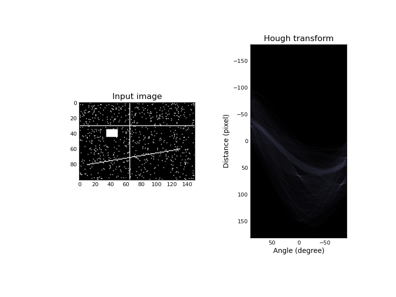

Module: transform¶
| scikits.image.transform.frt2(a) | Compute the 2-dimensional finite radon transform (FRT) for an n x n |
| scikits.image.transform.homography(image, H) | Perform a projective transformation (homography) on an image. |
| scikits.image.transform.hough(img[, theta]) | Perform a straight line Hough transform. |
| scikits.image.transform.ifrt2(a) | Compute the 2-dimensional inverse finite radon transform (iFRT) for |
frt2¶
- scikits.image.transform.frt2(a)¶
Compute the 2-dimensional finite radon transform (FRT) for an n x n integer array.
Parameters : a : array_like
A 2-D square n x n integer array.
Returns : FRT : 2-D ndarray
Finite Radon Transform array of (n+1) x n integer coefficients.
See also
- ifrt2
- The two-dimensional inverse FRT.
Notes
The FRT has a unique inverse iff n is prime. [FRT] The idea for this algorithm is due to Vlad Negnevitski.
References
[FRT] A. Kingston and I. Svalbe, “Projective transforms on periodic discrete image arrays,” in P. Hawkes (Ed), Advances in Imaging and Electron Physics, 139 (2006) Examples
Generate a test image: Use a prime number for the array dimensions
>>> SIZE = 59 >>> img = np.tri(SIZE, dtype=np.int32)
Apply the Finite Radon Transform:
>>> f = frt2(img)
Plot the results:
>>> import matplotlib.pyplot as plt >>> plt.imshow(f, interpolation='nearest', cmap=plt.cm.gray) >>> plt.xlabel('Angle') >>> plt.ylabel('Translation') >>> plt.show()
homography¶
- scikits.image.transform.homography(image, H, output_shape=None, order=1, mode='constant', cval=0.0)¶
Perform a projective transformation (homography) on an image.
For each pixel, given its homogeneous coordinate
![\mathbf{x}
= [x, y, 1]^T](../_images/math/1aa9d7913003fccfc89a3c2961147dac616653a4.png) , its target position is calculated by multiplying
with the given matrix,
, its target position is calculated by multiplying
with the given matrix,  , to give
, to give  .
E.g., to rotate by theta degrees clockwise, the matrix should be
.
E.g., to rotate by theta degrees clockwise, the matrix should be[[cos(theta) -sin(theta) 0] [sin(theta) cos(theta) 0] [0 0 1]]
or, to translate x by 10 and y by 20,
[[1 0 10] [0 1 20] [0 0 1 ]].
Parameters : image : 2-D array
Input image.
H : array of shape (3, 3)
Transformation matrix H that defines the homography.
output_shape : tuple (rows, cols)
Shape of the output image generated.
order : int
Order of splines used in interpolation.
mode : string
How to handle values outside the image borders. Passed as-is to ndimage.
cval : string
Used in conjunction with mode ‘constant’, the value outside the image boundaries.
hough¶
- scikits.image.transform.hough(img, theta=None)¶
Perform a straight line Hough transform.
Parameters : img : (M, N) ndarray
Input image with nonzero values representing edges.
theta : 1D ndarray of double
Angles at which to compute the transform, in radians. Defaults to -pi/2 - pi/2
Returns : H : 2-D ndarray of uint64
Hough transform accumulator.
distances : ndarray
Distance values.
theta : ndarray
Angles at which the transform was computed.
Examples
Generate a test image:
>>> img = np.zeros((100, 150), dtype=bool) >>> img[30, :] = 1 >>> img[:, 65] = 1 >>> img[35:45, 35:50] = 1 >>> for i in range(90): >>> img[i, i] = 1 >>> img += np.random.random(img.shape) > 0.95
Apply the Hough transform:
>>> out, angles, d = hough(img)
Plot the results:
>>> import matplotlib.pyplot as plt >>> plt.imshow(out, cmap=plt.cm.bone) >>> plt.xlabel('Angle (degree)') >>> plt.ylabel('Distance %d (pixel)' % d[0]) >>> plt.show()
import numpy as np import matplotlib.pyplot as plt from scikits.image.transform import hough img = np.zeros((100, 150), dtype=bool) img[30, :] = 1 img[:, 65] = 1 img[35:45, 35:50] = 1 for i in range(90): img[i, i] = 1 img += np.random.random(img.shape) > 0.95 out, angles, d = hough(img) plt.subplot(1, 2, 1) plt.imshow(img, cmap=plt.cm.gray) plt.title('Input image') plt.subplot(1, 2, 2) plt.imshow(out, cmap=plt.cm.bone, extent=(d[0], d[-1], np.rad2deg(angles[0]), np.rad2deg(angles[-1]))) plt.title('Hough transform') plt.xlabel('Angle (degree)') plt.ylabel('Distance (pixel)') plt.subplots_adjust(wspace=0.4) plt.show()
(Source code, png)

{kind=link}
ifrt2¶
- scikits.image.transform.ifrt2(a)¶
Compute the 2-dimensional inverse finite radon transform (iFRT) for an (n+1) x n integer array.
Parameters : a : array_like
A 2-D (n+1) row x n column integer array.
Returns : iFRT : 2-D n x n ndarray
Inverse Finite Radon Transform array of n x n integer coefficients.
See also
- frt2
- The two-dimensional FRT
Notes
The FRT has a unique inverse iff n is prime. See [FRT] for an overview. The idea for this algorithm is due to Vlad Negnevitski.
References
[FRT] A. Kingston and I. Svalbe, “Projective transforms on periodic discrete image arrays,” in P. Hawkes (Ed), Advances in Imaging and Electron Physics, 139 (2006) Examples
>>> SIZE = 59 >>> img = np.tri(SIZE, dtype=np.int32)
Apply the Finite Radon Transform:
>>> f = frt2(img)
Apply the Inverse Finite Radon Transform to recover the input
>>> fi = ifrt2(f)
Check that it’s identical to the original
>>> assert len(np.nonzero(img-fi)[0]) == 0